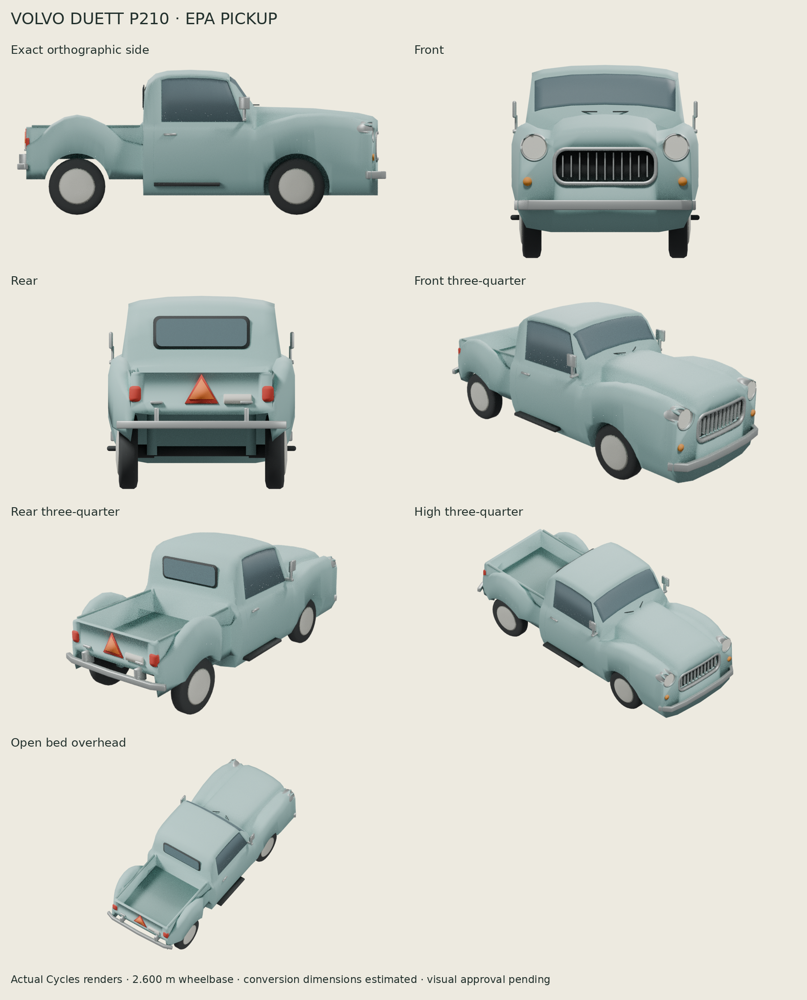
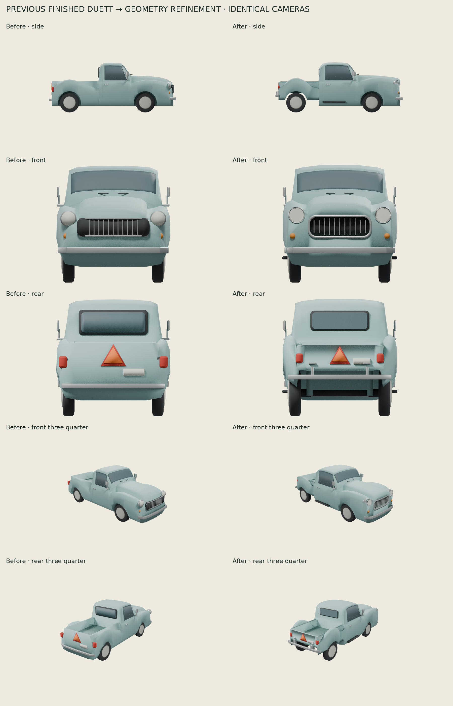

Original stylised pickup. Manufacturer-verified 2.600 m wheelbase; cab and bed dimensions are estimates. Visual approval pending.


14,782 triangles · 25 meshes · 11 materials. Geometry, GLB, hierarchy and browser driving checks passed. No physical iPad or hardware FPS benchmark.